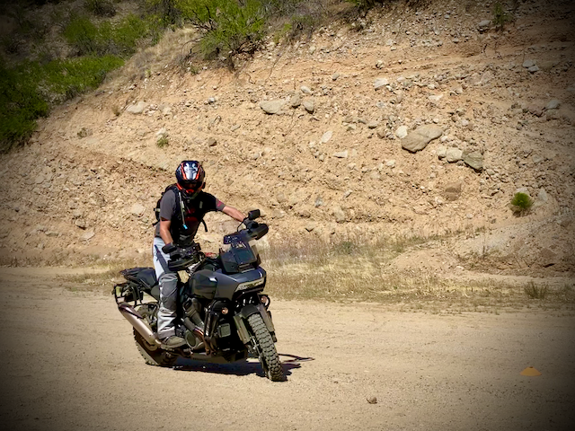

Jim Bergantzel

Dedicated and forward-thinking technology leader with a proven track record spanning more than two decades in technical sales. My journey began with a dynamic role at an Autodesk Value-Added Reseller (VAR) and later culminated in the establishment of my own successful SolidWorks VAR venture.
My expertise lies at the intersection of technology and business, where I have consistently excelled in providing innovative Technical Solutions. My unique ability to distill and communicate complex information empowers clients to make informed, strategic decisions, driving business growth and success.
Experience
October 2015 - PRESENT
Solutions Consultant | ACME Tech Company, Castle Rock, CO
- Provide project design consulting to solve critical business needs
- Work as a ‘Trusted Advisor’ to business owners during procurement processes
- Provide support and training to end-users on a day-to-day basis
- Manage multiple IT projects from collaborative planning through implementation
- Work closely with clients to assist with their migration to cloud services
- Develop and maintain relationships with clients to provide trusted advice
- Provide technical guidance and support to business owners on a variety of topics including operations, software acquisition, and hardware acquisition
- Work with clients to ensure compliance with licensing agreements
JUL 1997- DEC 2011
Founding Partner/Technical Solutions Executive │ Tridaq, Omaha, NE
- Tridaq was a value-added reseller business for SolidWorks 3D Modeling software
- Managed the full customer experience lifecycle for SolidWorks, from sales and support to training and customer relationship management
- Collaborated with sales organization staff to develop an effective 'team based' sales approach ensuring high opportunity closure
- Analyzed manufacturing customer requirements and provided technical solutions for various projects and user needs to ensure customer satisfaction
- Demonstrated the full product portfolio of SolidWorks products within the scope of manufacturing customer workflows
- Managed a team of IT Solution Consultants and Trainers across 5 states focusing on customer success
- Promoted the sales of SolidWorks solutions by providing training, technical support, and back-office leadership within our account strategy
- Sold into 100s of manufacturing and engineering firms across 5 states supporting 1000s of software users
- Supported the strategic and operational readiness of Tridaq for its acquisition by CATI and Alignex by enhancing and aligning business performance, efficiency, and quality
JUN 1995 - JUL 1997
Solutions Architect │ NECAD, Omaha, NE
- Provided technical product training for sales organization and customer on Autodesk products
- Conducted product demonstrations and presentations to potential clients on Autodesk products
- Utilized Customer Relationship Management software to track leads, manage accounts and monitor sales performance
- Advised customers on Autodesk product usage to improve production
- Collaborated with sales staff to develop an effective 'team based' sales approach
- Analyzed customer requirements and provided technical solutions for various projects
- Demonstrated several different software products including Autodesk AutoCAD and Autodesk Mechanical Desktop